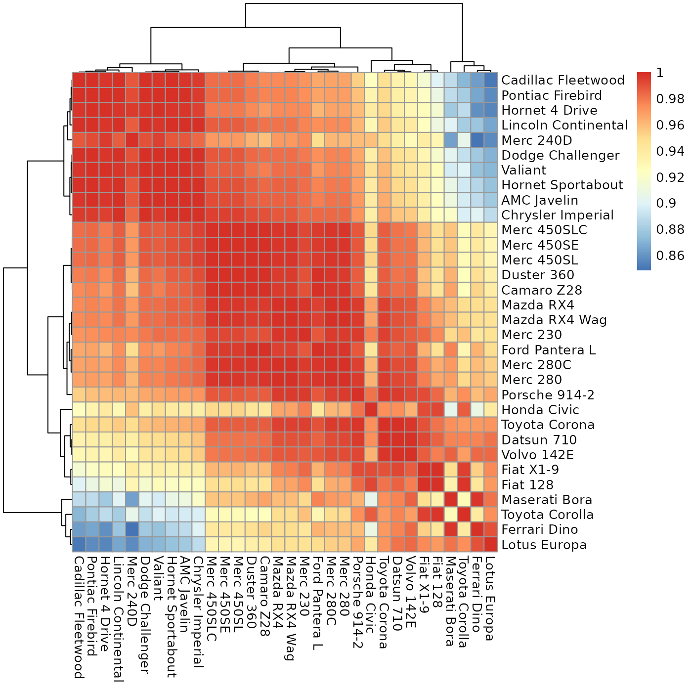
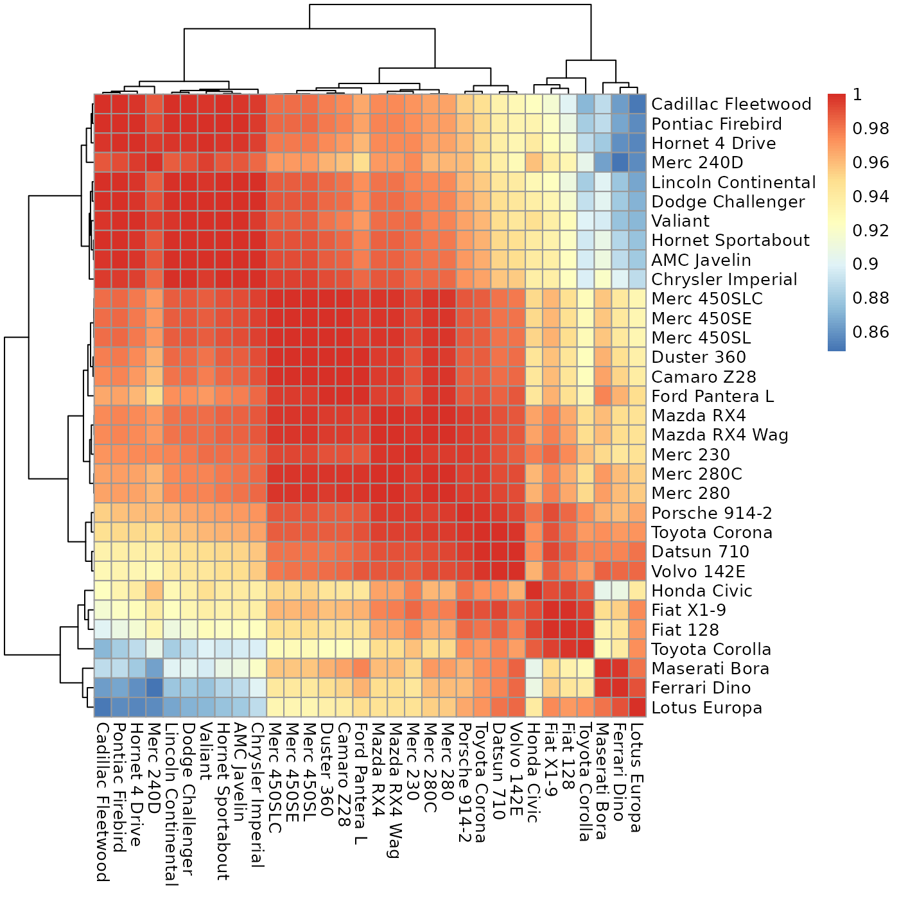
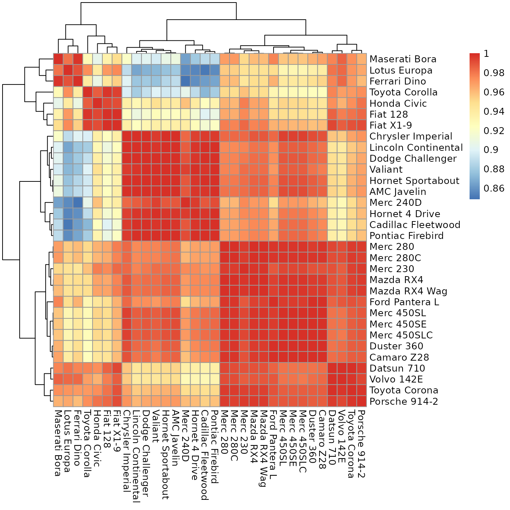

sheatmap.RdGiven a matrix expressing the cross-similarity between two (possibly different) sets of entities, this will reorder it to move the high values close to the diagonal, for a better visualization.
sheatmap( data, ..., order_data = NULL, annotation_col = NULL, annotation_row = NULL, order_rows = TRUE, order_cols = TRUE, squared_order = TRUE, same_order = FALSE, patch_cols_order = NULL, patch_rows_order = NULL, discount_outliers = TRUE, cluster_rows = TRUE, cluster_cols = TRUE, oclust_rows = TRUE, oclust_cols = TRUE, clustering_distance_rows = "euclidian", clustering_distance_cols = "euclidian", clustering_method = "ward.D2", clustering_callback = NA )
| data | A rectangular matrix to plot, of non-negative values (unless |
|---|---|
| ... | Additional flags to pass to |
| order_data | An optional matrix of non-negative values of the same size to use for computing the orders. |
| annotation_col | Optional data frame describing each column. |
| annotation_row | Optional data frame describing each row. |
| order_rows | Whether to reorder the rows. Otherwise, use the current order. |
| order_cols | Whether to reorder the columns. Otherwise, use the current order. |
| squared_order | Whether to reorder to minimize the l2 norm (otherwise minimizes the l1 norm). |
| same_order | Whether to apply the same order to both rows and columns (if reordering both). For a square matrix, may also contain 'row' or 'column' to force the order of one axis to apply to both. |
| patch_cols_order | Optional function that may be applied to the columns order, returning a better order. |
| patch_rows_order | Optional function that may be applied to the rows order, returning a better order. |
| discount_outliers | Whether to do a final order phase discounting outlier values far from the diagonal. |
| cluster_rows | Whether to cluster the rows, or the clustering to use. |
| cluster_cols | Whether to cluster the columns, or the clustering to use. |
| oclust_rows | Whether to use |
| oclust_cols | Whether to use |
| clustering_distance_rows | The default method for computing row distances (by default,
|
| clustering_distance_cols | The default method for computing column distances (by default,
|
| clustering_method | The default method to use for hierarchical clustering (by default,
|
| clustering_callback | Is not supported. |
Whatever pheatmap returns.
If you have an a-priori order for the rows and/or columns, you can prevent reordering either or
both by specifying order_rows=FALSE and/or order_cols=FALSE. Otherwise,
slanted_orders is used to compute the "ideal" slanted order for the data.
By default, the rows and columns are ordered independently from each other. If the matrix is
asymmetric but square (e.g., a matrix of weights of a directed graph such as a
K-nearest-neighbors graph), then you can can specify same_order=TRUE to force both rows
and columns to the same order. You can also specify same_order='row' to force the columns
to use the same order as the rows, or same_order='column' to force the rows to use the
same order as the columns.
You can also specify a patch_cols_order and/or a `patch_rows_order` function that
takes the computed "ideal" order and returns a patched order. For example, this can be used to
force special values (such as "outliers") to the side of the heatmap.
There are four options for controlling clustering:
* By default, sheatmap will generate a clustering tree using oclust, to generate
the "best" clustering that is also compatible with the slanted order.
* Request that sheatmap will use the same hclust as
pheatmap (e.g., oclust_rows=FALSE). In this case, the tree is reordered to
be the "most compatible" with the target slanted order. That is, sheatmap will invoke
reorder_hclust so that, for each node of the tree, the order of the two sub-trees will
be chosen to best match the target slanted order. The end result need not be identical to the
slanted order, but is as close as possible given the hclust clustering tree.
* Specify an explicit clustering (e.g., cluster_rows=hclust(...)). In this case,
sheatmap will again merely reorder the tree but will not modify it.
In addition, you can give this function any of the pheatmap flags, and it will just pass
them on. This allows full control over the diagram's features.
Note that clustering_callback is not supported. In addition, the default
clustering_method here is ward.D2 instead of complete, since the only
methods supported by oclust are ward.D and ward.D2.
